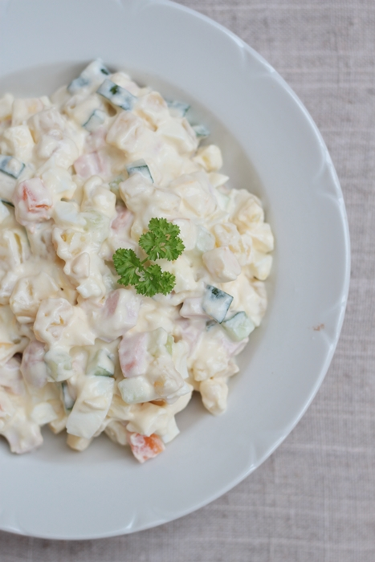

Kartulisalat

Eestimaise kartulisalati retsept.
Loomulikult on igal inimesel oma retsept, aga siin on üks variant, mida võib vastavalt soovile muuta.
Koostisosad
- 10-15 koorimata kartulit (nt Laura või Marabel)
- 5-6 keedetud muna
- 1-2 värsket kurki ja/või
- 4-5 marineeritud kurki
- 2-3 keskmist sibulat
- 400-500 g laste- või muud head keeduvorsti
- 4 koorimata keskmist porgandit
- konservitud rohelisi herneid
Kaste:
- 500 g hapukoort
- 500 g Hellmann's Original majoneesi
- hakitud tilli murulauku, sibulapealseid, peterselli
- soola ja musta pipart
Valmistamine
- Keeda kartulid ja porgandid
- Keeda munad
- Koori keedetud kartulid,porgandid ja munad
- Haki need kuubikuteks
- Haki kurk väikesteks kuubikuteks
- Sega eraldi kausis hapukoor ja majonees kokku
- Lisa sool ja pipar
- Vala kaste salatiga kokku ja sega läbi
- Naudi!